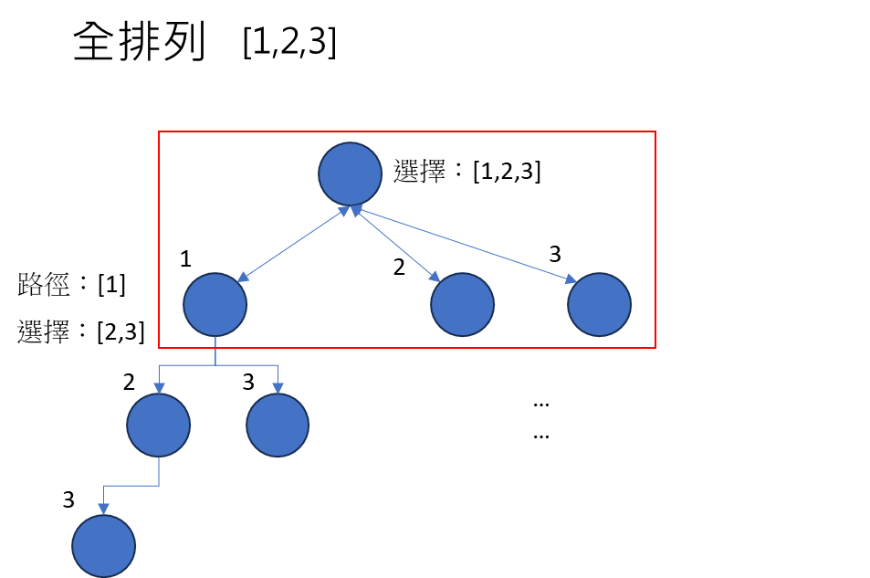
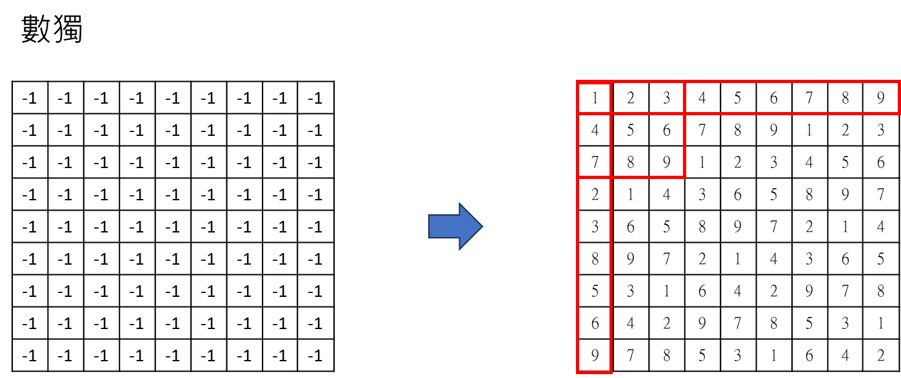

Algorithm - 回溯演算法(backtrack)
回溯演算法
回溯演算法是一種用於解決組合問題（如排列組合、子集、圖形問題等）的常用演算法。它通常使用遞迴的方式來探索所有可能的解，並在遇到不符合條件的情況下回溯（backtrack）到前一個狀態，繼續尋找其他解。
回溯演算法的基本思想是通過選擇不同的選項來構建解，並在每一步檢查該選項是否符合問題的限制條件。如果符合，則繼續遞迴地選擇下一個選項；如果不符合，則回溯到前一個狀態，選擇其他的選項。這樣不斷地遞迴和回溯，直到找到所有的解或者遍歷完所有的選項。
回溯演算法的時間複雜度通常比較高，因為它需要遍歷所有的可能解。然而，回溯演算法通常可以通過一些優化來減少不必要的遞迴調用，以提高效率。
排列(permutaion)

public class PermuteDemo {
static List<List<Integer>> tracks = new ArrayList<List<Integer>>();
public static void permute(int[] nums) {
List<Integer> track = new ArrayList<>();
backtrack(nums, track);
}
public static void backtrack(int[] nums, List<Integer> track) {
if(track.size() == nums.length) {
tracks.add(new ArrayList<>(track));
return;
}
for (int num : nums) {
if(track.contains(num))
continue;
track.add(num); // 路徑添加一個。
backtrack(nums,track); // 遞迴產生下一個組合。
track.remove(track.size() - 1); // 回溯上一個狀態，讓選擇保持初始狀態。
}
}
public static void main(String[] args) {
int[] nums = new int[] { 1, 2, 3 };
permute(nums);
System.out.println(tracks);
}
}
子集(subset)：
input = [1, 2, 3] Output =[ [], [1], [1, 2], [1, 2, 3], [1, 3], [2], [2, 3], [3] ]
public static List<List<Integer>> subset(List<Integer> nums) {
List<List<Integer>> res = new ArrayList<List<Integer>>();
List<Integer> track = new ArrayList<Integer>();
backtrack(nums, track, 0, res);
return res;
}
public static void backtrack(List<Integer> nums, List<Integer> track, int start,List<List<Integer>> res) {
res.add(new ArrayList<>(track));
for (int i = start; i < nums.size(); i++) {
track.add(nums.get(i));
backtrack(nums, track, i + 1, res);
track.remove(track.size() - 1);
}
}
input = [a,b,c] Output= [ [], [a], [a, b], [a, b, c], [a, c], [b], [b, c], [c] ]
public static List<List<String>> subsetAlphabt(List<String> data) {
List<List<String>> res = new ArrayList<List<String>>();
List<String> track = new ArrayList<String>();
backtrack2(data, track, 0, res);
return res;
}
public static void backtrack2(List<String> data, List<String> track, int start, List<List<String>> res) {
res.add(new ArrayList<>(track));
for (int i = start; i < data.size(); i++) {
track.add(data.get(i));
backtrack2(data, track, i + 1, res);
track.remove(track.size() - 1);
}
}
字串作為參數
public static List<String> permutation(String str) {
List<String> res = new ArrayList<>();
StringBuilder sb = new StringBuilder();
backTrack(str, sb, 0, res);
return res;
}
public static void backTrack(String str, StringBuilder sb, int start, List<String> res) {
res.add(sb.toString());
for (int i = start; i < str.length(); i++) {
sb.append(str.charAt(i));
backTrack(str, sb, i+1, res);
sb.deleteCharAt(sb.length() - 1);
}
}
組合 (combination)
輸入兩個數字 n,k，透過演算法輸出 [1..n] 中 k個數字組合。
例如：n=4，k=2，代表數字 1~4，任取2個不重複的組合。共有 12,13,14,23,24,34 等 6 種組合。
public static List<List<Integer>> combine(int n, int k) {
List<List<Integer>> res = new ArrayList<List<Integer>>();
List<Integer> track = new ArrayList<Integer>();
combineBackTrack(1, n, k, track, res);
return res;
}
public static void combineBackTrack(int start, int n, int k, List<Integer> track, List<List<Integer>> res) {
if (track.size() == k) {
res.add(new ArrayList<>(track));
return;
}
for (int i = start; i <= n; i++) {
if (track.contains(i))
continue;
track.add(i);
combineBackTrack(i + 1, n, k, track, res);
track.remove(track.size() - 1);
}
}
System.out.println(combine(4, 2)); // C(4,2)，C4取2 = 6
數獨(suduku)

(1) 先從 (0,0)=1 開始，然後找下一個(0,1)，如果下一個回傳，代表1是正確的。
(2) 如果下一個回傳 false，則回到原本的狀態(回溯) 並且重新給下一個值，即 (0,0) = 2，接著重複第一步的循環。
(3) backtrack 還有 backtrack，又還有 backtrack... 應該怎麼思考？答案是，這是電腦要思考的事情，我們只要確定電腦最終會給我一個最後的結果就好了。 如果要理解過程的話，我們可以用「數獨第一列」理解。

(0,0) = 1 -> (0,1) = 1 X (0,0) = 1 -> (0,1) = 2 -> (0,2) = 1 X (0,0) = 1 -> (0,1) = 2 -> (0,2) = 2 X (0,0) = 1 -> (0,1) = 2 -> (0,2) = 3 -> (0,3) = 1 (X) (0,0) = 1 -> (0,1) = 2 -> (0,2) = 3 -> (0,3) = 2 (X) (0,0) = 1 -> (0,1) = 2 -> (0,2) = 3 -> (0,3) = 3 (X) (0,0) = 1 -> (0,1) = 2 -> (0,2) = 3 -> (0,3) = 4** ...
PS： 當 (0,1) = 1 X 時，代表此路不通，要回溯並賦值，也就是 (0,1) = 2。
完整代碼：
public static void solveSudoku(int[][] board) {
backtrackSudoku(board, 0, 0);
}
public static boolean backtrackSudoku(int[][] board, int i, int j) {
int m = 9, n = 9;
if (j == n) {
return backtrackSudoku(board, i + 1, 0);
}
if (i == m)
return true;
if (board[i][j] != -1) {
return backtrackSudoku(board, i, j + 1);
}
for (int num = 1; num <= 9; num++) {
if (!isValid(board, i, j, num))
continue;
board[i][j] = num;
boolean flag = backtrackSudoku(board, i, j + 1);
if (flag) {
return true;
}
board[i][j] = -1;
}
return false;
}
public static boolean isValid(int[][] board, int r, int c, int target) {
for (int i = 0; i < 9; i++) {
// 同一列
if (board[r][i] == target)
return false;
// 同一行
if (board[i][c] == target)
return false;
// 九宮格
if (board[(r / 3) * 3 + i / 3][(c / 3) * 3 + i % 3] == target)
return false;
}
return true;
}
public static void main(String[] args) {
int[][] board = new int[9][9];
for (int i = 0; i < board.length; i++) {
Arrays.fill(board[i], -1);
}
solveSudoku(board);
printSudoku(board);
}